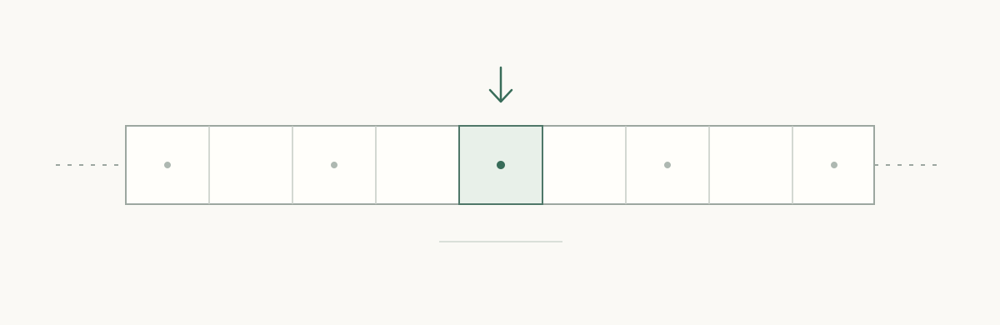

A Turing machine is an extraordinarily generous model of a computer. Its tape has no fixed limit. It can inspect a description of itself and carry out any procedure expressible by its rules. Yet there is no algorithm that can correctly determine whether every possible program will eventually stop.
The infinite tape removes a familiar excuse. We cannot build our way out of this problem with more storage. The obstruction appears when a program is allowed to respond to a prediction about its own behavior.
Some machines can predict their own termination. The title asks why no universal, always-correct computable predictor can do that for every possible program, including itself. That is the precise limit worth understanding.
What is computation?
An effective computation follows a finite set of exact instructions. In the usual deterministic model, the current state determines the next step. A person working with paper and pencil can carry out such a procedure. So can a machine. Adding 12 and 7 is the same calculation whether a human writes the result or a processor stores it in a register.
The instructions have a finite description. Their execution need not be finite. A program can run forever, even though its source code fits on a page. To compute a defined output effectively, the procedure must produce that output after finitely many steps. This distinction will matter when we reach the halting problem.
In Effective Computation by Humans and Machines, philosopher Oron Shagrir describes the history behind this idea. Church's lambda calculus, Kleene's recursive functions, Post's finite combinatory processes, and Turing machines arrived at equivalent classes of computable functions. Shagrir also makes a useful historical point: early analyses focused on the idealized human computer following mechanical rules, whereas later formulations often speak of machine computation. The abstract procedure is what connects them. (Shagrir, §1)
Calling a human a computer in this sense does not mean every kind of human thought has been shown to be algorithmic. It means that when someone follows an effective calculation, they are computing.
Unlimited tape, one step at a time
A Turing machine has a finite set of states and transition rules. The tape has no preset last cell. At each step the machine reads a symbol, changes its state, may write a symbol, and moves its head. After any finite number of steps, it has visited only finitely many cells.
There is also no promise that the machine will stop. A finite set of instructions can describe an infinite execution. Giving a machine an unbounded tape removes a fixed storage ceiling, but the machine still proceeds one discrete step at a time.
What can a machine predict?
Some programs tell us their fate immediately. A program containing only return halts. An unconditional loop with no exit runs forever. Neither case requires us to solve an undecidable problem.
Turing's result begins with a stronger demand. Imagine an algorithm H that receives the code of any program P and an input x. It always finishes its analysis and answers whether P(x) will halt. It must be correct for every possible pair.
There are two demands here: the answer must be right, and the prediction procedure must itself finish. A process that occasionally says “I don't know” can be useful, but it does not meet this specification.
The machine that contradicts its own forecast
Assume H exists. We can now write a new program D. It asks H what will happen when the supplied program receives its own description as input, then deliberately does the opposite.
def D(code):
if H(code, code) == 1:
while True:
pass # H predicted halt; D loops.
else:
return # H predicted loop; D halts.This is pseudocode: H is the hypothetical universal predictor that we are about to disprove. Now run D on its own description, d. The predicted execution is D(d).
If H(d,d) says “halts,” D(d) runs forever. If it says “runs forever,” D(d) stops. No prediction satisfies its own specification.
The program has not somehow begun to halt and run forever at the same time. We reached a contradiction because we assumed a universally correct, terminating, computable predictor existed. So that predictor cannot exist.
Make the prediction
Suppose you are the universal predictor H. What do you predict about the constructed program D(d)? Choose either answer. The program acts on it.
This is a two-case logical demonstration. It does not execute an infinite loop.
We asked whether the machine could predict its own death. The proof is about whether a program halts at all. A universal algorithm that correctly supplied the exact halting time for every program, together with a way to report nontermination, would solve that weaker yes-or-no question too. It is therefore impossible for the same reason.
Why not run the program and see?
Simulation can confirm a halt. Execute the program until it stops, and you have a finite witness. Nontermination is harder to establish this way. After a million steps, a program might halt on step 1,000,001. After a trillion, it might halt on the next one.
A proof of nontermination can sometimes be short. A loop invariant can show that an exit condition is unreachable. A finite-state machine that revisits the same complete state must repeat the same future execution. But there is no algorithm that finds a correct termination or nontermination proof for every arbitrary program.
Gödel was studying a related problem
In 1931, Kurt Gödel asked what a formal mathematical system can establish using its own axioms and proof rules. A proof is a finite sequence of justified steps. Such proofs can be encoded as integers and checked mechanically.
Gödel used that machinery to construct a sentence G that, in effect, says it has no proof within a particular formal theory T. The crucial ingredient is a way for arithmetic to express facts about arithmetic proofs.
If T is consistent and meets the standard technical conditions, it cannot prove this Gödel sentence. In the standard interpretation of arithmetic, the sentence is true. That conclusion concerns what can be derived inside T, not what could be established with stronger axioms.
The two constructions use a similar maneuver. Gödel's sentence discusses its own provability. Turing's program is built to defeat a proposed prediction of its own behavior. Both arguments use encodings and diagonalization: construct an object that responds to the rule supposedly governing every object in the collection.
Self-reference alone causes no trouble. A program can print its own source code. The contradiction comes from the specific move of negating or reversing a universal claim.
The bridge: turn a theorem into a program
We can make the connection more precise. Take a formal theory T whose proofs can be effectively enumerated and checked. Write a program PT that searches through all proofs until it finds a proof of the contradiction 0 = 1.
def P_T():
for proof in enumerate_proofs(T):
if proves(proof, "0 = 1"):
returnIf T is inconsistent, some finite proof establishes 0 = 1. The search eventually finds it and halts. If T is consistent, there is no such proof. The search keeps going. We have translated the consistency of a mathematical theory into the nontermination of a program.
Gödel's second incompleteness theorem says that a sufficiently strong, consistent, effectively axiomatized theory T cannot prove its own consistency, under the usual formalization. For this proof-search program, the theory can formalize the link between consistency and nontermination. It therefore cannot prove that PT runs forever, even though, assuming T is consistent, that is exactly what happens.
A stronger external theory may prove the original system consistent and hence prove that the program does not halt. The inability belongs to the specified theory. This is one reason it matters to name the axioms being used when we claim a program has been verified.
Are programs proofs?
There is a precise sense in which they can be. Under the Curry–Howard correspondence, propositions are represented as types and proofs as terms inhabiting those types. In proof assistants and suitable total programming languages, checking a program term can amount to checking a proof.
That correspondence has conditions. An arbitrary Turing-machine program is not automatically a proof, and a nonterminating program does not establish the proposition it was supposed to prove. Yet the link helps explain why program synthesis and automated theorem proving share so much machinery. Both search for finite symbolic objects that satisfy formal requirements.
We can still prove useful programs correct
Undecidability is a claim about unrestricted classes of programs. Restricted models can be decidable. In a deterministic finite-state machine, for instance, there are only finitely many possible complete configurations. Either the machine halts, or a state eventually repeats and its execution loops.
Verification methods take advantage of this structure. Model checking explores finite transition systems. Ranking functions establish termination for particular loops. Abstract interpretation can replace an unmanageable program with a simpler model that preserves the property under investigation. Total programming languages rule out nontermination by design.
In my work on program synthesis, that suggests searching for a useful representation alongside the program. A difficult question may become easy once we find an invariant, a reduction, or a restricted language in which a decision procedure exists. This cannot give us a universal solution for arbitrary programs. It gives us a method of finding the solvable fragments.
What does this tell us about nature?
A Turing machine has an unbounded tape, yet the diagonal argument survives. Removing the storage ceiling changes nothing about the logical contradiction. Does the same kind of limit constrain physical systems that attempt to predict their own futures?
We have to be careful with that last step. Turing's theorem is a theorem about a mathematical model. The Church–Turing thesis connects that model to the informal idea of an effective procedure. A claim that every physically realizable computation is Turing-computable is stronger and needs assumptions about physics. Shagrir discusses the difficulty of moving from idealized human procedures to claims about all physical machines. The theorem itself does not settle whether some hypothetical non-Turing physical process is possible.
Nor does it show that every organism, computer, or physical object is unable to forecast its own end. Many systems have well-understood failure modes. A machine can calculate a deadline written into its own program. Finite models may permit exact prediction. The undecidability result concerns the promise of one procedure that works for all programs of the unrestricted class.
The result changes how I think about intelligence and prediction. More resources can make enormous classes of problems manageable. A better algorithm can eliminate huge amounts of search. But a universal algorithm that always answers every question about the behavior of arbitrary programs is not waiting to be discovered. Its specification is contradictory.
For researchers and engineers, I would rather ask which assumptions make a particular property decidable or provable. What can we learn about the program's structure? Which representation exposes a short proof? How much of the original question can a smaller model settle? Those are questions we can work on.
Sources and further reading
- Oron Shagrir, Effective Computation by Humans and Machines. On the history of effective procedures, idealized human computers, and claims about machine computation. See especially §1 and §2.
- Alan M. Turing, On Computable Numbers, with an Application to the Entscheidungsproblem, received in 1936 and published in 1937. Its diagonal argument and Entscheidungsproblem result precede the standard modern presentation of the halting problem.
- Stanford Encyclopedia of Philosophy, Gödel's Incompleteness Theorems. For the first and second theorems and their formal assumptions.
- Stanford Encyclopedia of Philosophy, The Church–Turing Thesis. For the difference between a mathematical computability result and a thesis about effective methods.